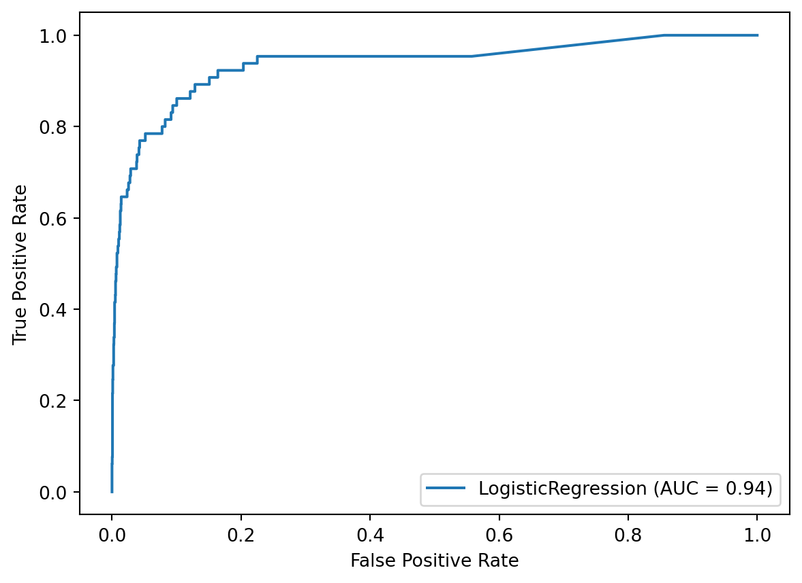
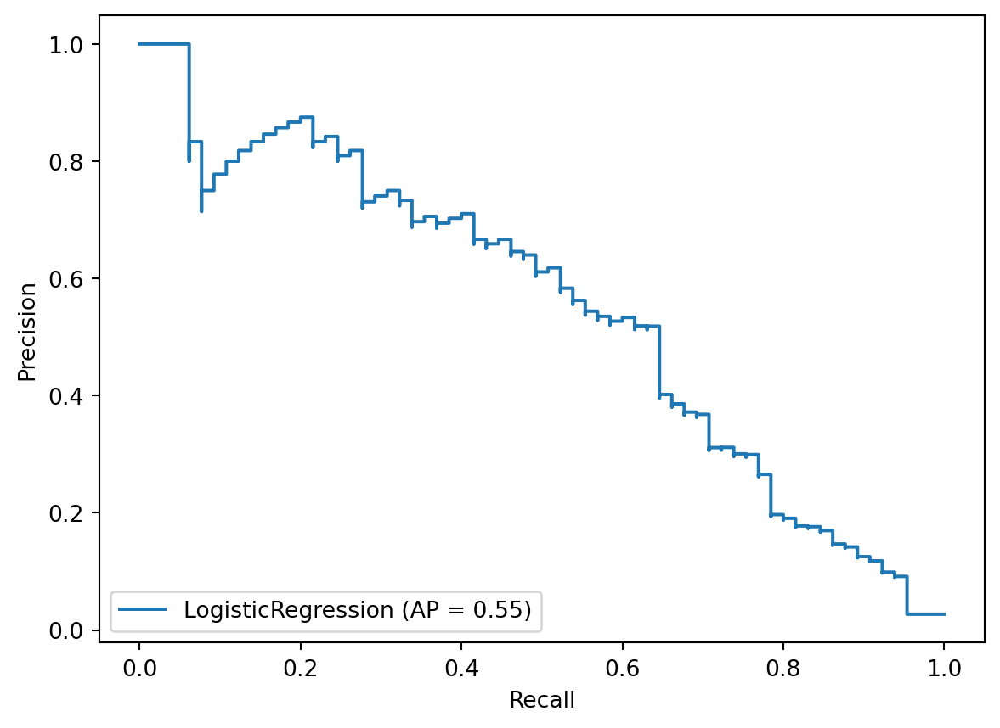

X_train, X_test, y_train, y_test = train_test_split(scan_X, scan_y,
test_size=0.25, random_state=1,
stratify=scan_y)19 Class imbalance walkthrough
19.1 Best practices for class imbalance
We covered a lot of concepts in the previous chapter that may have been new to you: class imbalance, the confusion matrix and all the rates you can calculate from it, the classification report, ROC curves and AUC, the decision threshold, and cost-sensitive learning.
In order to properly demonstrate these concepts, I modified my actual workflow in two important ways that are slightly less than optimal. In this chapter, I’m going to walk through my real workflow for class imbalance problems so that you can see the best practices.
So what are the two modifications that I made?
- In the previous chapter, I used train/test split for model evaluation instead of cross-validation. Cross-validation is better than train/test split because it’s easier to use and it provides more reliable estimates of model performance.
- In the previous chapter, I tuned the decision threshold using the same dataset that I used to optimize the model. It’s actually better to tune the threshold using different data than you used to optimize the model, because it has been shown experimentally to lead to more reliable estimates of True Positive Rate and False Positive Rate.
In this chapter, I’m going to walk through my entire workflow, start to finish, while making these two improvements.
19.2 Step 1: Splitting the dataset
Step 1 of my real workflow is to split the dataset into training and testing sets. This might be a confusing way to start, because I just said that we’re going to use cross-validation in this chapter rather than train/test split.
That is absolutely true, but we’re actually using the train_test_split function differently than we did in chapter 18:
- In chapter 18, we used train/test split for model evaluation.
- In this chapter, we’re using it to set aside independent data for tuning the decision threshold.
For a longer discussion of this concept, you can review lesson 10.12.
Anyway, our train_test_split code is identical to the code that we used in lesson 18.3, including the use of stratified sampling.
19.3 Step 2: Optimizing the model on the training set
Step 2 is to optimize your model (or Pipeline) using the training set only.
As you can see, I’m using cross-validation as the evaluation procedure, and AUC as the evaluation metric that I want to optimize. But notice that I’m passing the training set only to cross_val_score. I’m not touching the testing set during this step so that it can function as an independent dataset for the next step.
cross_val_score(logreg, X_train, y_train, cv=5, scoring='roc_auc').mean()0.9137689754365026To optimize the model, we’ll use a grid search. Normally this would be a grid search of all pipeline steps, but in this case it will be a grid search of just the model.
Since cost-sensitive learning is useful when there’s class imbalance, we’re going to include the class_weight parameter in our search. There are four options I’ll try:
- None is the default, and it means don’t use cost-sensitive learning.
- ‘balanced’ is what we used previously, and it specifies class weights that are inversely proportional to the class frequencies in the input data. Since our input data is about 98% class 0 and 2% class 1, it would apply a weight of 2 to class 0 and a weight of 98 to class 1.
- The third option is custom weights, which we specify with a dictionary. This means for class 0, I want a weight of 1, and for class 1, I want a weight of 99. In other words, I’m applying an even higher weight to class 1 than the ‘balanced’ option.
- The fourth option is another set of custom weights, in which I’m applying a slightly lower weight to class 1 than the ‘balanced’ option. Note that the weights can be any numbers and don’t actually have to add up to 100 like I’m doing here.
im_params = {}
im_params['penalty'] = ['l1', 'l2']
im_params['C'] = [0.1, 1, 10]
im_params['class_weight'] = [None, 'balanced', {0:1, 1:99}, {0:3, 1:97}]Now that we’ve set up the parameters to be searched, we can pass them to GridSearchCV and use AUC as the metric. When doing the search, again we only pass it the training set.
The search results in an AUC of 0.923, which is higher than the unoptimized model we passed to cross_val_score.
training_grid = GridSearchCV(logreg, im_params, cv=5, scoring='roc_auc', n_jobs=-1)
training_grid.fit(X_train, y_train)
training_grid.best_score_0.9227187648199522Here’s the best set of parameters it found, which actually uses one of the custom class weights.
training_grid.best_params_{'C': 1, 'class_weight': {0: 1, 1: 99}, 'penalty': 'l1'}Now that we’ve found the best set of parameters, we need to save the model with those parameters as an object.
We could try to further optimize the model by creating more features, using feature selection, trying a different type of model, and so on, but instead we’re just going to move on to the next step.
best_model = training_grid.best_estimator_19.4 Step 3: Evaluating the model on the testing set
Step 3 is to use our best model to make predictions for the testing set and evaluate those predictions. Again, we did not touch the testing set during step 2, so the model has never seen this data.
We’ll use the predict method to generate class predictions, and the predict_proba method to generate predicted probabilities.
y_pred = best_model.predict(X_test)
y_score = best_model.predict_proba(X_test)[:, 1]We’ll evaluate the predicted probabilities using AUC and the ROC curve. The AUC is 0.94, which is our best estimate of how well the trained model will perform on truly new data.
roc_auc_score(y_test, y_score)0.9375151395656705disp = plot_roc_curve(best_model, X_test, y_test)
We’ll evaluate the class predictions using a confusion matrix and the classification report. Notice that the True Positive Rate is 95%, and the False Positive Rate is 24%.
confusion_matrix(y_test, y_pred)array([[2082, 649],
[ 3, 62]])print(classification_report(y_test, y_pred)) precision recall f1-score support
0 1.00 0.76 0.86 2731
1 0.09 0.95 0.16 65
accuracy 0.77 2796
macro avg 0.54 0.86 0.51 2796
weighted avg 0.98 0.77 0.85 2796
19.5 Step 4: Tuning the decision threshold
Step 4 is to tune the decision threshold based on our priorities, meaning our tolerance of False Negatives versus False Positives.
This is the same process you saw in lesson 18.8, except this time, we’re tuning the threshold using a testing set that the model never saw when it was being optimized. Again, this is important because it will lead to a more reliable estimate of the True Positive and False Positive Rates.
Anyway, let’s pretend that we would prefer a slightly lower False Positive Rate, and are willing to tolerate a lower True Positive Rate in order to achieve it. As such, we’ll increase the decision threshold slightly to 0.55.
confusion_matrix(y_test, y_score > 0.55)array([[2179, 552],
[ 5, 60]])print(classification_report(y_test, y_score > 0.55)) precision recall f1-score support
0 1.00 0.80 0.89 2731
1 0.10 0.92 0.18 65
accuracy 0.80 2796
macro avg 0.55 0.86 0.53 2796
weighted avg 0.98 0.80 0.87 2796
The True Positive Rate has decreased from 95% to 92%, and the False Positive Rate has decreased from 24% to 20%. Let’s assume we’re happy with these numbers, and we’ll move on to the final step.
19.6 Step 5: Retraining the model and making predictions
Step 5 is to use the decision threshold we chose when making predictions on new data.
Before making predictions, it’s critical that we train our best model on all of our data, meaning the entirety of scan_X and scan_y, otherwise we’re throwing away valuable data. In other words, we’re using the hyperparameters that were chosen from the training data during step 2, and fitting that model with all of the data.
best_model.fit(scan_X, scan_y)LogisticRegression(C=1, class_weight={0: 1, 1: 99}, penalty='l1',
random_state=1, solver='liblinear')We’ll use that model to make predictions on new data, meaning data for which you don’t know the actual class labels. I don’t have access to any new data, so I’m just going to create some random data for demonstration purposes.
I’ll set NumPy’s random seed for reproducibility, and then use the randint function to create a 4 by 6 array with random integers between 0 and 2. In other words, this is a simulation of 4 samples of new data, each of which has 6 features.
np.random.seed(1)
scan_X_new = np.random.randint(0, 3, (4, 6))
scan_X_newarray([[1, 0, 0, 1, 1, 0],
[0, 1, 0, 1, 0, 2],
[1, 2, 0, 2, 1, 2],
[0, 0, 2, 0, 1, 2]])To make predictions, we’ll pass the new data to the predict_proba method, and save the output.
scan_y_new_score = best_model.predict_proba(scan_X_new)[:, 1]Finally, we’ll predict class 1 any time the predicted probability is greater than our decision threshold of 0.55, otherwise we’ll predict class 0. These are our class predictions for the 4 new samples.
(scan_y_new_score > 0.55) * 1array([1, 0, 1, 0])19.7 Q&A: Should I use an ROC curve or a precision-recall curve?
One alternative to ROC curves that you might have heard about is the precision-recall curve. In this lesson, I’ll explain the precision-recall curve and then compare it to the ROC curve.
To start, I want to look at the confusion matrix for our best model from earlier in the chapter. I’m going to fit the model on X_train and y_train, and then generate class predictions and predicted probabilities for X_test.
best_model.fit(X_train, y_train)
y_pred = best_model.predict(X_test)
y_score = best_model.predict_proba(X_test)[:, 1]Then, we can create the confusion matrix by comparing the true values with the predicted values. There are two rates that we’ll calculate from the confusion matrix this time.
confusion_matrix(y_test, y_pred)array([[2082, 649],
[ 3, 62]])The first rate is recall, which is just another name for True Positive Rate. It answers the question: When cancer is present, how often is that correctly predicted? We divide the True Positives by the entire bottom row, and we get 95%.
62 / (3 + 62)0.9538461538461539The second rate we’ll calculate is called precision. It answers the question: When cancer is predicted, how often is that prediction correct? We divide the True Positives by the entire right column, and we get 9%. Notice that unlike all of our other calculations, the denominator for precision is a column total rather than a row total.
62 / (649 + 62)0.08720112517580872Both precision and recall are listed in the classification report. We just calculated the precision and recall for class 1, as you can see here.
print(classification_report(y_test, y_pred)) precision recall f1-score support
0 1.00 0.76 0.86 2731
1 0.09 0.95 0.16 65
accuracy 0.77 2796
macro avg 0.54 0.86 0.51 2796
weighted avg 0.98 0.77 0.85 2796
Now that we understand precision and recall, let’s plot the precision-recall curve using the plot_precision_recall_curve function, which was introduced in version 0.22. It uses a similar API to plot_roc_curve in that we pass it the fitted model, X_test, and y_test, though the API will be changing in scikit-learn 1.0.
So what are we looking at? The precision-recall curve is a plot of precision (on the y-axis) versus recall (on the x-axis) for all possible decision thresholds. This is very similar to an ROC curve in that it can help you to tune the decision threshold of your model based on your priorities.
And just like you can summarize an ROC curve by calculating the area underneath it, you can summarize a precision-recall curve by calculating the area underneath it. There are multiple ways to do this calculation, but the metric used in scikit-learn is called average precision.
from sklearn.metrics import plot_precision_recall_curve
disp = plot_precision_recall_curve(best_model, X_test, y_test)
To calculate average precision, we import it and pass the true values and the predicted probabilities, and it outputs an average precision of 0.55.
from sklearn.metrics import average_precision_score
average_precision_score(y_test, y_score)0.5475069395983533To put this in context, a perfect model would achieve a score of 1.0, whereas a completely uninformed model would achieve a score equivalent to the fraction of positive samples, which in this case is about 0.02.
As a reminder, the AUC of an uninformed model is 0.5, which means that AUC and average precision usually have very different baseline scores for the same problem.
In this chapter, I recommended using AUC as your primary evaluation metric in cases of class imbalance. However, there are many people who recommend using average precision instead. Which metric should you use?
First, let me share the most common critique of AUC, and then I’ll share my response. Looking at our confusion matrix might be helpful to you during this discussion, so I’ll share it now.
confusion_matrix(y_test, y_pred)array([[2082, 649],
[ 3, 62]])Let’s quickly run through the rates again:
- True Positive Rate (or recall) is 62 out of 65, which is 95%.
- False Positive Rate is 649 out of 2731, which is 24%.
- Precision is 62 out of 711, which is 9%.
With that in mind, I’ll do my best to summarize the most common critique of AUC in cases of class imbalance, which is as follows:
In cases of severe class imbalance, there will be a very large number of True Negatives. As such, the False Positive Rate will be artificially low, and thus the AUC will be artificially high, and so AUC will no longer provide a realistic estimate of the model’s performance.
As an example of this, imagine that we increased the number of True Negatives from 2082 to 200000 but left all the other values the same, as shown here. The False Positive Rate would drop from 24% to 0.3%, and the AUC would increase (though we can’t say by how much, since you can’t calculate AUC from a confusion matrix). Thus the model would look great based on the AUC, even though the model’s precision is still only 9%.
The solution, according to this critique, is to use the precision-recall curve and average precision, since it will provide a more realistic estimate of the model’s performance by ignoring the number of True Negatives.
I have three responses to this critique.
My first response is that neither AUC nor average precision is inherently better, rather it depends on what you’re trying to measure:
- AUC focuses on both classes. In the context of this problem, AUC measures how skillfully the model finds cancer when it’s present, balanced against how skillfully the model doesn’t find cancer when it’s not present.
- Average precision, on the other hand, focuses only on the positive class. Because both precision and recall ignore the number of True Negatives, the average precision will not change regardless of whether there are two thousand or two million True Negatives.
Ultimately, the choice between AUC and average precision is as follows:
- If you’re interested in a model’s performance across both classes, then AUC is the better choice.
- If you’re only interested in how well the model locates the positive class, then average precision is the better choice.
In our particular case of detecting cancer, my judgment is that the performance on both classes is relevant, and thus AUC is the better choice.
My second response to this critique is that in cases of severe class imbalance, even if you think the False Positive Rate is artificially low, which makes the model look really good, it’s just as fair to call the precision artificially low, which makes the model look really bad.
For example, I would judge the model shown in this confusion matrix to be excellent:
- If someone doesn’t actually have cancer, they only have a 3 in 1000 chance of being told that they do.
- And if someone does have cancer, they only have a 5 in 100 chance of being told that they don’t.
Despite these characteristics, the model still has a precision of just 9%. And even if we moved all 3 False Negatives to the True Positive box, resulting in a True Positive Rate of 100%, the precision would still be 9%, making it sound like a very poor model.
My third response to this critique is that the actual AUC score is irrelevant, and thus it doesn’t matter if the AUC is artificially high.
The only reason we’re using any evaluation metric during model tuning is that we need some relevant metric to maximize in order to choose between models. AUC fits this purpose well because it measures how skillfully the model is separating the classes. Once you’ve maximized AUC, then you can change the decision threshold to balance the True Positive Rate and False Positive Rate according to your priorities. But the AUC score itself is never your business objective, so it doesn’t matter if the AUC is artificially high.
The bottom line is as follows:
- Both AUC and average precision are reasonable metrics to maximize even in cases of class imbalance.
- Neither metric is a perfect representation of a model’s performance.
- Choose AUC if you’re interested in the model’s performance across both classes, and choose average precision if you’re only interested in how well the model locates the positive class.
19.8 Q&A: Can I use a different metric such as F1 score?
There are many other metrics that are popular to use in cases of class imbalance, such as the F1 score or F-beta score, balanced accuracy, Cohen’s kappa, and Matthews correlation coefficient.
However, all of these metrics require you to choose a decision threshold, whereas AUC and average precision capture the performance of a classifier across all possible thresholds. Thus by using AUC or average precision as your evaluation metric, you can first maximize the overall performance of your classifier during model tuning, and then you can alter the decision threshold to match your priorities.
If you were instead trying to maximize F1 score (for example) during model tuning, you’ll be optimizing the model’s hyperparameters based on the default decision threshold of 0.5, but that threshold might be far from optimal for your given problem. In other words, you might miss out on a more optimal model because you were tuning it based on a non-optimal decision threshold.
If you do want to use F1 score (or any of these other metrics), I would recommend using them only to help you choose between different decision thresholds, after your model has already been optimized for either AUC or average precision.
19.9 Q&A: Should I use resampling to fix class imbalance?
In cases of class imbalance, there is a set of techniques collectively known as “resampling” that is often used. Resampling refers to any technique that transforms the training data in order to achieve more balance between the classes. In other words, resampling attempts to fix the class imbalance at the dataset level rather than working around it, which is what we’ve done in this chapter.
Here are the two most common resampling approaches:
- Undersampling (or downsampling) is the process of deleting samples from the majority class.
- Oversampling (or upsampling) is the process of creating new samples from the minority class, either by duplicating existing samples or by simulating new samples. One popular oversampling method that simulates new samples is SMOTE.
Both of these approaches can be done in either a directed, strategic fashion or in a random fashion. Or they can be done together, in which you both undersample and oversample.
Regardless of the specific approach, keep in mind that the act of resampling risks deleting important samples and/or adding meaningless new samples.
All of that being said, is resampling actually helpful? Experimental results show that resampling methods can be helpful, but are not always helpful. And while there are dozens of different resampling algorithms, no one algorithm works best across all datasets and models, meaning that it’s hard to give practical advice for which one to use.
If you decide to pursue resampling, keep in mind that it’s not yet supported by scikit-learn, though it may eventually be available. In the meantime, you can use the imbalanced-learn library, which is supposed to be fully compatible with scikit-learn. Personally, I tend not to use this approach in order to avoid adding additional complexity or project dependencies.
Here are two guidelines for the proper use of resampling:
- First, you should treat resampling like any other preprocessing technique. Namely, it should be included in a Pipeline in order to avoid data leakage.
- Second, the resampling technique should only ever be applied to training data, and not testing data. The model should always be tested on the natural, imbalanced data so that it can output a realistic estimate of model performance.